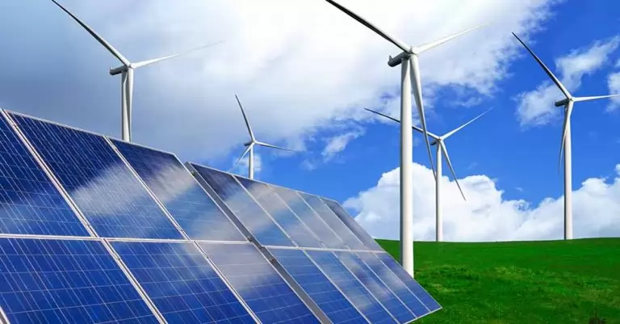
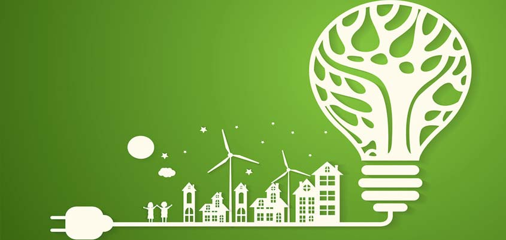
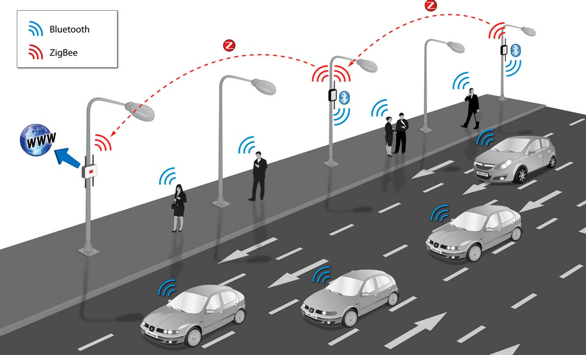

Fontes de Energia Limpa
Fontes de energia limpa são aquelas que causam baixo impacto ambiental e são renováveis. Em cidades inteligentes, essas fontes são essenciais para um desenvolvimento sustentável.
- Solar: Utiliza a radiação do sol para gerar eletricidade por meio de painéis fotovoltaicos.
- Eólica: Usa a força do vento para movimentar turbinas e gerar energia elétrica.
- Hídrica: Aproveita o fluxo da água em rios ou represas para movimentar geradores.
- Biomassa: Converte resíduos orgânicos em energia por meio da queima controlada ou biodigestores.
Eficiência Energética
Eficiência energética é o uso racional da energia, reduzindo desperdícios e aumentando o aproveitamento. Cidades sustentáveis aplicam tecnologias que otimizam o consumo em diversas áreas:
- Iluminação Pública LED: Economiza até 80% em relação às lâmpadas tradicionais.
- Construções Sustentáveis: Usam isolamento térmico, painéis solares e automação para reduzir o consumo.
- Mobilidade Elétrica: Ônibus, carros e bicicletas elétricas são alternativas limpas para o transporte urbano.
Tecnologia e Inovação
A tecnologia permite que as cidades coletem, processem e utilizem dados para melhorar o uso de energia em tempo real.
- Internet das Coisas (IoT): Sensores conectados monitoram consumo energético e condições ambientais.
- Redes Inteligentes (Smart Grids): Distribuem energia com maior eficiência e se adaptam à demanda.
- Sistemas de Gestão Urbana: Integram dados de transporte, iluminação e clima para decisões automatizadas.